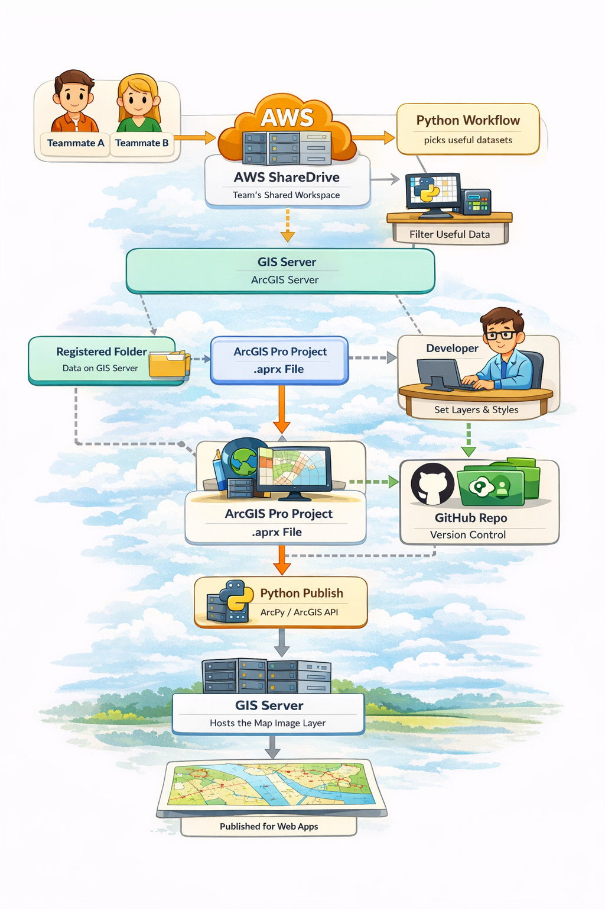

This project involves building automated Python-based workflows to synchronize high-priority spatial data between organizational ShareDrives and AWS EC2 infrastructure. The goal is to ensure data consistency across hybrid environments and streamline the web map publishing process.

These improvements increased the reliability and efficiency of service publishing by reducing manual effort, improving version control, and enabling scheduled updates. Keeping ArcGIS project and service definition files under Git also made it easier to track changes, manage publishers, and maintain consistent deployment across environments.